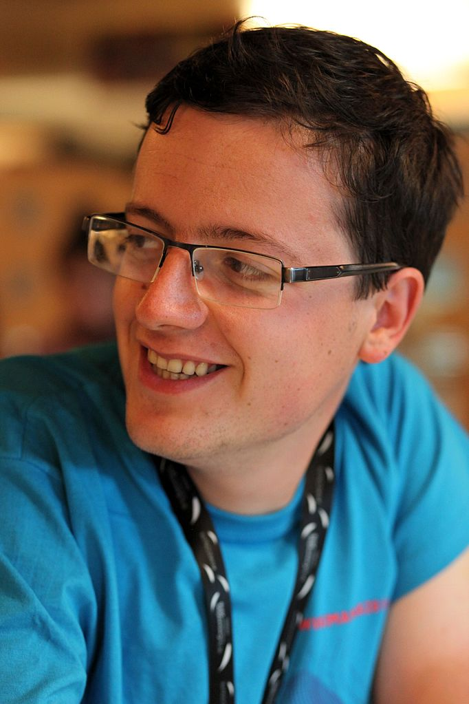

Thomas Pellissier Tanon
Thomas Pellissier Tanon is a researcher at Lexistems, a startup focusing on providing better search systems to its customers.
He did his PhD at Télécom Paris under the supervision of Fabian Suchanek and Antoine Amarilli.
His email address is first name at pellissier-tanon.fr.
Publications
- Neural Knowledge Base Repairs Thomas Pellissier Tanon and Fabian Suchanek, ESWC 2021. Won the best paper award. folder
- YAGO 4: A Reason-able Knowledge Base Thomas Pellissier Tanon, Gerhard Weikum and Fabian Suchanek, ESWC 2020. folder
- Learning How to Correct a Knowledge Base from the Edit History Thomas Pellissier Tanon, Camille Bourgaux and Fabian Suchanek, The Web Conference 2019. folder
- Querying the Edit History of Wikidata Thomas Pellissier Tanon and Fabian Suchanek, ESWC 2019 demo session. folder
- Bash Datalog: Answering Datalog Queries with Unix Shell Commands Thomas Rebele, Thomas Pellissier Tanon and Fabian Suchanek, ISWC 2018. Spotlight paper. folder
- Completeness-aware Rule Learning from Knowledge Graphs Thomas Pellissier Tanon, Daria Stepanova, Simon Razniewski, Paramita Mirza and Gerhard Weikum, IJCAI 2018. Short version of the ISWC paper for the Sister Conference Best Paper track. folder
- Demoing Platypus – A Multilingual Question Answering Platform for Wikidata Thomas Pellissier Tanon, Marcos Dias de Assunção, Eddy Caron and Fabian Suchanek, ESWC 2018 demo session. folder
- Property Label Stability in Wikidata Thomas Pellissier Tanon and Lucie-Aimée Kaffe, WikiWorkshop 2018. folder
- A Knowledge Base for Personal Information Management David Montoya, Thomas Pellissier Tanon, Serge Abiteboul, Pierre Senellart and Fabian Suchanek, LDOW 2018. folder
- Completeness-aware Rule Learning from Knowledge Graphs Thomas Pellissier Tanon, Daria Stepanova, Simon Razniewski, Paramita Mirza and Gerhard Weikum, ISWC 2017. Nominated for the best student paper award. folder
- Question Answering Benchmarks for Wikidata Dennis Diefenbach, Thomas Pellissier Tanon, Kamal Singh and Pierre Maret, ISWC 2017 poster session. folder
- Thymeflow, a personal knowledge base with spatio-temporal data David Montoya, Thomas Pellissier Tanon, Serge Abiteboul and Fabian Suchanek, CIKM 2016 demo session. folder
- From Freebase to Wikidata: The Great Migration Thomas Pellissier Tanon, Denny Vrandečić, Sebastian Schaffert, Thomas Steiner and Lydia Pintscher, WWW 2016. folder